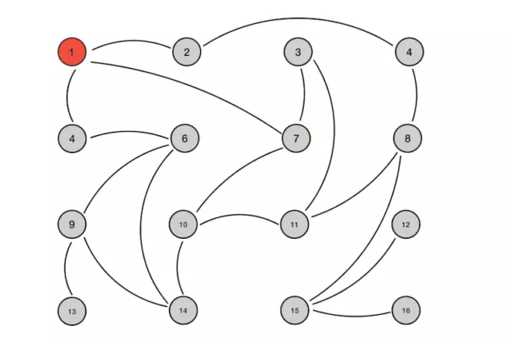

前边微服务框架选择中，反复看到一致性的协议，这一阶段就来对这些一些进行研究，包括：Paxos协议、Raft协议、Gossip协议，本文是这一系列第三篇：Gossip协议
前言
如果仅看协议本身，Gossip协议比Paxos与Raft协议都要简单一些，下载论文一看，在它背后还是有些东西需要去深入学习一下。与前2篇不同，本文打算不再以论文为中心。
本文参考Gossip文章、Gossip知乎以及论文
简介
Gossip 过程是由种子节点发起，当一个种子节点有状态需要更新到网络中的其他节点时，它会随机的选择周围几个节点散播消息，收到消息的节点也会重复该过程，直至最终网络中所有的节点都收到了消息。这个过程可能需要一定的时间，由于不能保证某个时刻所有节点都收到消息，但是理论上最终所有节点都会收到消息，因此它是一个最终一致性协议。

ps: 从动图上可以看出4节点被传播了2遍，问题是什么情况下集群认为已经达成一致，不再需要传播了。
正是疫情期间，Gossip的指数传播效率还是很高的，系统的不一致状态很快可以得到收敛。即使再快的效率，这个过程还是需要时间的，在实时性要求不高的场合，应该是能够接受的。
Gossip
Gossip的2种类型
- Anti-Entropy（反熵）：以固定的概率传播所有的数据(只要数据不同步就开始同步数据)
- Rumor-Mongering（谣言传播）：仅传播新到达的数据(每隔固定的时间同步数据)
Anti-Entropy 是 SI model，节点只有两种状态，Suspective 和 Infective，叫做 simple epidemics。
Rumor-Mongering 是 SIR model，节点有三种状态，Suspective，Infective 和 Removed，叫做 complex epidemics
在 SI model 下，一个节点会把所有的数据都跟其他节点共享，以便消除节点之间数据的任何不一致，它可以保证最终、完全的一致。由于在SI model 下消息会不断反复的交换，因此消息数量是非常庞大的，无限制的（unbounded），这对一个系统来说是一个巨大的开销。
在 Rumor Mongering（SIR Model） 模型下，消息可以发送得更频繁，因为消息只包含最新 update，体积更小。而且，一个 Rumor 消息在某个时间点之后会被标记为 removed，并且不再被传播，因此，SIR model 下，系统有一定的概率会不一致。而由于，SIR Model 下某个时间点之后消息不再传播，因此消息是有限的，系统开销小。
PS：SI方式很不环保，为了一致性付出了巨大的带宽代价，而且对于大数据，根本不现实，几个节点固定时间传播PB量级数据，这没有可能。
通信方式
在 Gossip 协议下，网络中两个节点之间有三种通信方式:
Push: 节点 A 将数据 (key,value,version) 及对应的版本号推送给 B 节点，B 节点更新 A 中比自己新的数据
Pull：A 仅将数据 key, version 推送给 B，B 将本地比 A 新的数据（Key, value, version）推送给 A，A 更新本地
Push/Pull：与 Pull 类似，只是多了一步，A 再将本地比 B 新的数据推送给 B，B 则更新本地
如果把两个节点数据同步一次定义为一个周期，则在一个周期内，Push 需通信 1 次，Pull 需 2 次，Push/Pull 则需 3 次。虽然消息数增加了，但从效果上来讲，Push/Pull 最好，理论上一个周期内可以使两个节点完全一致。直观上，Push/Pull 的收敛速度也是最快的。
协调机制
协调机制是讨论在每次2个节点通信时，如何交换数据能达到最快的一致性，也即消除两个节点的不一致性。push、pull等是通信方式，协调是在通信方式下的数据交换机制。协调所面临的最大问题是，因为受限于网络负载，不可能每次都把一个节点上的数据发送给另外一个节点，也即每个Gossip的消息大小都有上限。在有限的空间上有效率地交换所有的消息是协调要解决的主要问题。
精确协调
精确协调希望在每次通信周期内都非常准确地消除双方的不一致性，具体表现为相互发送对方需要更新的数据，因为每个节点都在并发与多个节点通信，理论上精确协调很难做到。精确协调需要给每个数据项独立地维护自己的version，在每次交互是把所有的(key,value,version)发送到目标进行比对，从而找出双方不同之处从而更新。但因为Gossip消息存在大小限制，因此每次选择发送哪些数据就成了问题。当然可以随机选择一部分数据，也可确定性的选择数据。对确定性的选择而言，可以有最老优先（根据版本）和最新优先两种，最老优先会优先更新版本最新的数据，而最新更新正好相反，这样会造成老数据始终得不到机会更新，也即饥饿。
ps：精确协调并没有解决双方的不一致，除非把双方所有的数据进行对比，而这又是很低效的，另外各自维护自己的version也增加了对比的难度。各自维护自己的version对于每个节点本身是有用处的，但对于2个节点而言，并没发现起用处。整体协调
整体协调与精确协调不同之处是，整体协调不是为每个数据都维护单独的版本号，而是为每个节点上的宿主数据维护统一的version。比如节点P会为(p1,p2,…)维护一个一致的全局version，相当于把所有的宿主数据看作一个整体，当与其他节点进行比较时，只需选择这些宿主数据的最高version，如果最高version相同说明这部分数据全部一致，否则再进行精确协调。
整体协调对数据的选择也有两种方法：
广度优先：根据整体version大小排序，也称为公平选择
深度优先：根据包含数据多少的排序，也称为非公平选择。因为后者更有使用价值，所有原论文更鼓励后者ps：整体协调理想很丰满，问题是如何维护全局的version，这不就是Raft中的term吗？不就是Paxos中的index吗？它俩为了维持这个一致，费了多少功夫。
特点
优点
1）扩展性
网络可以允许节点的任意增加和减少，新增加的节点的状态最终会与其他节点一致。2）去中心化
Gossip 协议不要求任何中心节点，所有节点都可以是对等的，任何一个节点无需知道整个网络状况，只要网络是连通的，任意一个节点就可以把消息散播到全网。缺点
1）消息的延迟
由于 Gossip 协议中，节点只会随机向少数几个节点发送消息，消息最终是通过多个轮次的散播而到达全网的，因此使用 Gossip 协议会造成不可避免的消息延迟。不适合用在对实时性要求较高的场景下。2）消息冗余
Gossip 协议规定，节点会定期随机选择周围节点发送消息，而收到消息的节点也会重复该步骤，因此就不可避免的存在消息重复发送给同一节点的情况，造成了消息的冗余，同时也增加了收到消息的节点的处理压力。而且，由于是定期发送，因此，即使收到了消息的节点还会反复收到重复消息，加重了消息的冗余。
总结
gossip有种四处透风的感觉，我有很高的传播性，但传没传成功，我不管。一种方式对所传数据不设限制，一直在集群中荡着就行，另一种方式我设过期时间，过了这段时间就不传了。但至此没有被感染的，就一致不会感染了。
如果有更好的数据退出传播的方式，gossip会更好一些。
gossip的扩展性，可以在大量的节点之间进行数据的传播，这比raft、paxos都有更好的场景。